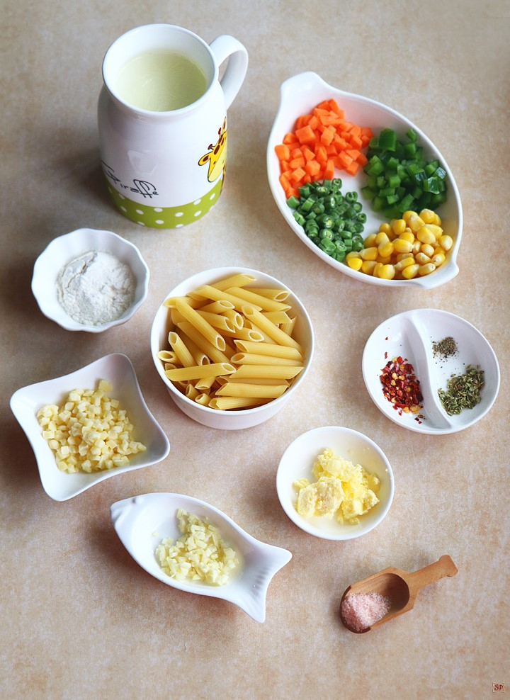
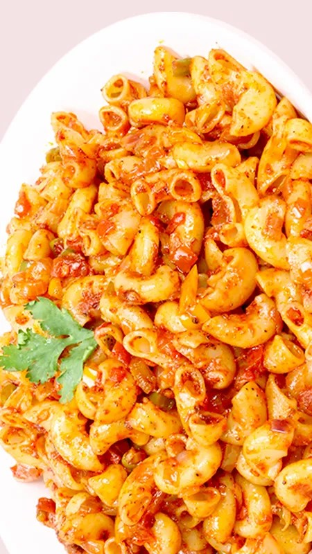

Creamy Tomato and
Spinach Pasta Recipe
Easier than a box meal, this creamy tomato and spinach pasta is also more flavorful and delicious. 100% real ingredients. Perfect for busy weeknights!

Prep. Time
5 minutes
Cook Time
20 minutes
Total Time
25 minutes
Servings
4

Ingredients
- 1/2 lb. penne pasta
- 1 yellow onion
- 2 cloves garlic
- 1 Tbsp olive oil
- 1 15oz. can diced tomatoes
- 1/2 tsp dried oregano
- 1/2 tsp dried basil
- 1 pinch crushed red pepper (optional)
- 1/2 tsp salt
- freshly cracked black pepper to tast
- 2 Tbsp tomato paste
- 2 oz. cream cheese
- 1/4 cup grated Parmesan
- 4 oz. fresh spinach
Procedures
- Bring a large pot of water to a boil over high heat. Add the pasta and continue to boil until tender (7-10 minutes). Drain the pasta in a colander.
- While the pasta is cooking, prepare the creamy tomato sauce. Dice the onion and mince the garlic. Add the onion, garlic, and olive oil to a large skillet and sauté over medium heat until the onions are soft and translucent (3-5 minutes).
- Add the diced tomatoes (with juices), oregano, basil, crushed red pepper, salt, and some freshly cracked pepper to the skillet. Stir to combine. Add the tomato paste and a 1/2 cup of water to the skillet and stir until the tomato paste has mixed into the sauce.
- Turn the heat down to low. Cut the cream cheese into a few pieces and then add them to the skillet with the tomato sauce. Use a whisk to stir the sauce until the cream cheese has fully melted and the sauce is creamy. Add the Parmesan to the skillet and stir until it is melted into the sauce.
- Add the fresh spinach to the skillet and gently stir it into the sauce until it has wilted (2-3 minutes). Add the pasta and stir until it is well coated in the creamy tomato sauce. Taste and adjust the salt and pepper as needed. Serve warm.

Nutritions
Serving: 1 serving |
Calories: 309.43kcal |
Carbohydrates: 54.15g |
Protein: 11.53g |
Fat: 5.75g |
Sodium: 348.9mg |
Fiber: 5.75g